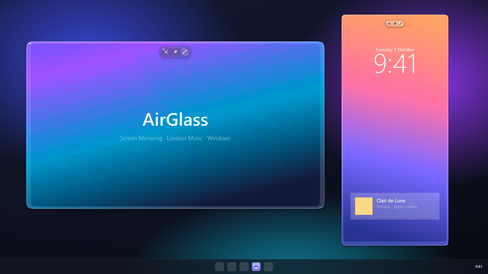

How to AirPlay to Windows 11 and 10
Windows can't receive AirPlay on its own, so your iPhone won't see your PC. Install a small receiver app and your PC shows up in Screen Mirroring like an Apple TV. It takes about a minute.

Why Windows needs an app for AirPlay
AirPlay is Apple's way of sending a screen or music to another device. Windows supports Miracast, a different standard, and has no AirPlay receiver built in. An AirPlay receiver app fills the gap: it announces your PC on the network so your iPhone, iPad or Mac can find it, then shows the picture and plays the sound.
Mirror your iPhone or iPad to a Windows PC
- Install AirGlass on the PC. Download the installer and run it. AirGlass is free, open source and needs no account. It sits in the tray by the clock and starts with Windows, so it's always ready.
- Put both on the same network. Your phone on Wi-Fi and your PC on Wi-Fi or Ethernet is fine, as long as they're behind the same router.
- Open Screen Mirroring. Swipe down from the top-right corner of your iPhone or iPad to open Control Center, then tap Screen Mirroring.
- Choose your PC. Your PC's name appears in the list. Tap it and your screen appears on the PC within a second. Turn the phone sideways and the window turns with it.
To stop, open Control Center again and tap Stop Mirroring.
Mirror a Mac to a Windows PC
On the Mac, click Control Center in the menu bar, then Screen Mirroring, and choose your PC. Your Mac's display appears on the PC in its own window.
Play music from your iPhone on your PC
You don't need to mirror the screen to play music. In Music, Spotify, a podcast app or any app with an AirPlay button, tap AirPlay and choose your PC. The sound plays through the PC's speakers or headphones. With AirGlass, AirPlay music arrives as Apple Lossless and is played bit-for-bit, so it sounds exactly as the phone sent it.
Free, no watermark, no time limit.
Download AirGlassIf your PC doesn't show up
Different networks
Guest Wi-Fi networks and mesh systems with "client isolation" or "AP isolation" switched on stop devices from seeing each other. Join your main network on both, or turn isolation off in the router settings.
A VPN is on
A VPN on the phone or the PC can hide local devices. Pause it while you mirror.
Windows Firewall
The receiver needs to be allowed through the firewall on private networks. AirGlass sets this up during install. If you said no to the prompt, open Windows Security › Firewall & network protection › Allow an app through firewall and tick AirGlass.
Windows warns about the installer
Windows is cautious about new apps from small developers. Click More info, then Run anyway. AirGlass's code is public and every release is built in the open by GitHub Actions.
Still stuck? Open a support request and say what you see.
Questions
Does Windows 11 support AirPlay?
No. Windows has Miracast built in, but not AirPlay, so an iPhone won't see a Windows PC until you install an AirPlay receiver.
Is there a free way to AirPlay to Windows?
Yes. AirGlass is free and open source, with no watermark and no time limit. The free edition mirrors full screen; an optional one-time Pro upgrade adds a floating window you can move, resize, zoom and keep on top.
Can I AirPlay Netflix or YouTube to my PC?
Screen Mirroring shows whatever is on your screen. Protected video, such as Netflix, mirrors as black because the app blocks it. AirGlass doesn't support the separate "send a video link" kind of AirPlay.
Does it work in 4K?
AirGlass mirrors at up to 1080p and about 60 fps. Phones asked for 4K drop to around 28 fps, so 1080p looks and feels better.
Which AirPlay receiver should I use?
See AirGlass compared with AirServer, LonelyScreen, Reflector and 5KPlayer.